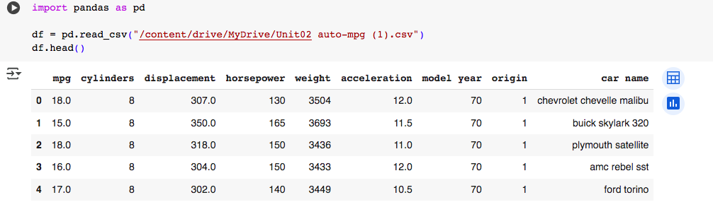
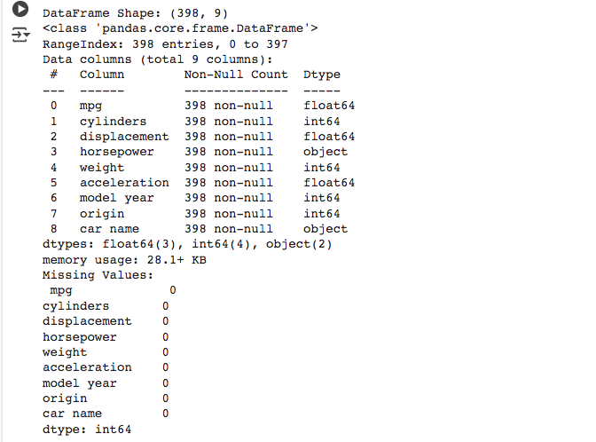
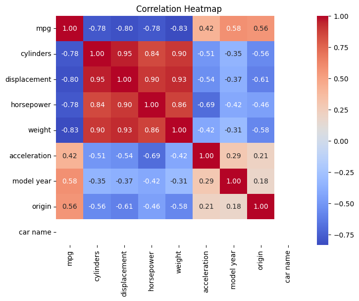
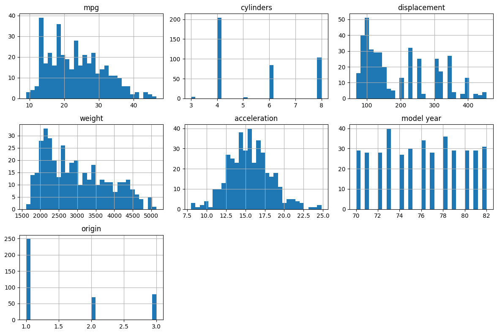

Exploratory Data Analysis


During my Exploratory Data Analysis (EDA) in Google Collaboratory, I began by loading the dataset (Unit02 auto-mpg) and examining its basic structure. This initial step allowed me to identify missing values. As you can see in the above image, there were no null values. Addressing these gaps proved crucial, as unhandled missing data could skew model outcomes. Next, I examined skewness and kurtosis for each numerical feature. These statistical measures offered insights into how balanced or extreme the distributions were, aiding me in determining the best transformations or feature engineering techniques.


A correlation heat map provided a visual summary of relationships among variables, guiding me on which features might be redundant or highly predictive. I also plotted histograms of various parameter pairs, revealing trends and outliers that might otherwise remain hidden in raw tables. Replacing categorical data with numerical encodings was another significant step; this process, while conceptually straightforward, highlighted the ethical considerations around how data is labelled or grouped.
From a legal, social, and ethical standpoint, I learned the importance of respecting data privacy and ensuring that transformations do not perpetuate bias. By applying well-known EDA techniques, I could more critically appraise potential risks and uncertainties in the dataset. As I was working on this task, I was also working on the group project so collaborating virtually on these tasks strengthened my teamwork skills, underscoring the necessity of clear roles, communication, and organisation within a development setting